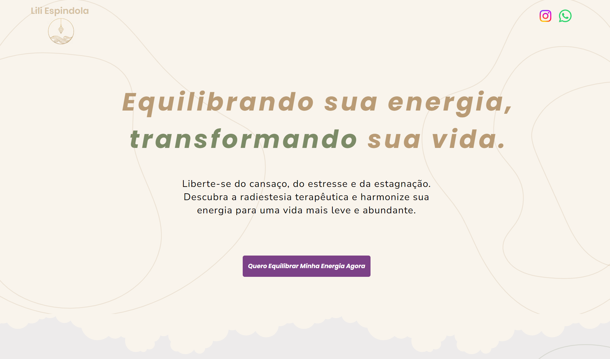

Sobre mim
Olá, meu nome é Maria Eduarda. Sou estudante de Análise e Desenvolvimento de Sistemas, com foco em programação e design de interfaces digitais. Tenho experiência em UI/UX Design (Figma) e desenvolvimento front-end (HTML, CSS e JavaScript). Paralelamente, curso Psicologia, o que me proporciona uma visão diferenciada sobre o comportamento humano, ajudando a desenvolver soluções digitais mais empáticas e intuitivas. Atualmente, participo do projeto voluntário Einstein Floripa, onde atuo em gestão de pessoas e apoio a estudantes.
Nas horas vagas, adoro ler, assistir a séries e aprender coisas novas. Estou sempre em busca de novos desafios para crescer profissional e pessoalmente.
Download CV
Formação Educacional e Idiomas
Sou estudante da 2ª fase de Análise e Desenvolvimento de Sistemas na UNINTER – Centro Universitário Internacional, onde tenho aprendido muito sobre lógica de programação e as tecnologias mais recentes do mercado. Além disso, curso a 6ª fase de Psicologia na UNICESUSC.
Tenho conhecimento em Inglês em nível intermediário, sempre buscando aprimorar minhas habilidades de comunicação.
Meus Projetos
Projeto 1: Landing page
Uma landing page que desenvolvi utilizando o figma para o prototipo e o Wix para desenvolver. Foi um projeto que fiz para praticar meus conhecimentos de UI/UX.
Ver ProjetoProjeto 2: Bouncing dvd logo

Um projeto simples que desenvolvi para praticar meus conhecimentos em JavaScript, HTML e CSS.
Ver Projeto